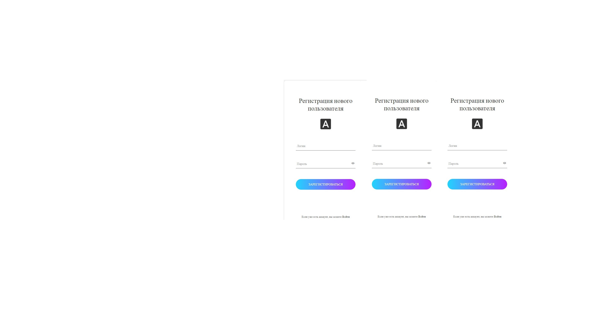
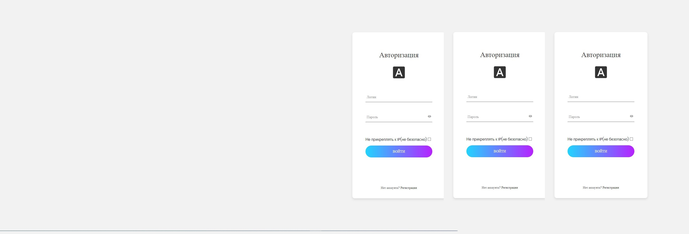

8<!DOCTYPE html>
<html>

<head>
	<title>Пустота</title>
	<meta name="description" content="A-Frame Examples" charset="UTF-8">
	<script src="js/aframe-master-v1.3.0.min.js"></script>
	<script src="js/aframe-environment-component.min.js"></script>
	<script src="js/link-controls.js"></script>
</head>

<body>

<!-- cursor activated from mouse position; only intersects objects with "link" component added (the <a-link> tag) -->

<!-- environments featured: default, volcano, goldmine, egypt, forest, arches, japan -->
<a-scene environment="preset: default;" cursor="rayOrigin: mouse;" raycaster="far: 100; objects: [link];">
	  
	<a-assets>
        
        
	</a-assets>

<!-- note: raycast issue (link still active) after walking through portal -->

<a-sphere id="origin" radius="0.25" position="0 0 0" color="white"></a-sphere>


<a-link position="-2 1.6 -5" rotation="0 20 0"
	href="register.php" title="Registration" image="#previewEgypt"></a-link>


<a-link position="2 1.6 -5" rotation="0 -20 0"
	href="login.php" title="Authorization" image="#previewArches"></a-link>


</a-scene>

</body>
</html>